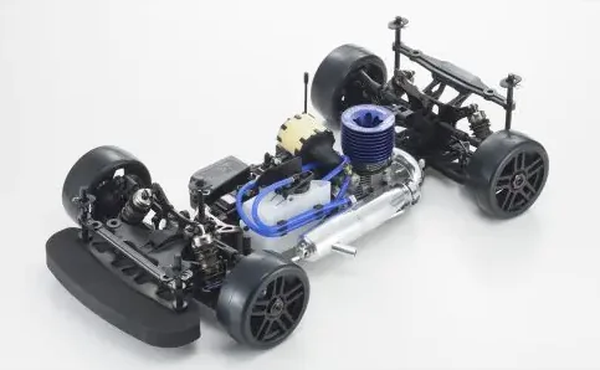

京商 インファーノGT3

引用元画像：京商公式サイト
📋 基本情報
| メーカー | 京商（Kyosho） |
|---|---|
| 機種名 | インファーノGT3（Inferno GT3） |
| シャーシ略称 | インファーノGT3 |
| 型番 | 33010 |
| 発売時期 | 2017年7月 |
| 価格 | ¥96,800（税込） |
| 生産状況 | 現行販売中 |
| カテゴリー | ラジコンカー（1/8スケール エンジンRCカー） |
| サブカテゴリー | GTツーリングカー（4WD オンロード） |
| シリーズ | インファーノGTシリーズ 第3世代 |
📏 シャーシスペック
| 全長 | 537mm |
|---|---|
| 全幅 | 310mm |
| 全高 | 116mm（エンジン、ボディポストは除く） |
| ホイールベース | 359mm |
| トレッド | フロント262mm / リヤ266mm |
| タイヤ幅/径 | 別売（1/8用ラバータイヤ） |
| フレーム | アルミプレート式シャーシ（MP9 TKI4ベース） |
| 全備重量 | 約3,270g |
⚙️ 駆動系
| 駆動方式 | 4WDシャフトドライブ |
|---|---|
| デフギヤ | 軽量ギヤデフ（新設計） |
| ギヤ比 | 1速10.87:1 / 2速7.90:1 |
| ギヤピッチ | 詳細不明 |
| トランスミッション | 詳細不明 |
| ドライブシャフト | ユニバーサルジョイント式ドライブシャフト |
| エンジン | 別売 推奨：21サイズ後方排気エンジン |
🔧 サスペンション
| 形式 | 4輪ダブルウィッシュボーン独立懸架 |
|---|---|
| サスアーム | 強化アルミパーツ採用 |
| ダンパー | ビッグボアオイルダンパー×4本 ※コイルスプリング式 |
| ステアリング | 詳細不明 |
| ショックマウント | 強化ショックマウント（新設計） |
| ベアリング | フルボールベアリング装備 |
💡 特徴
インファーノMP9 TKI4バギーシャーシベース
- 2017年にリリースされた最新世代GTツーリングカー
- 実績あるインファーノMP9 TKI4バギーシャーシをベースに開発
- ハイエンドバギーの技術を投入した高性能設計
- アルミプレート式シャーシで高剛性を実現
MP9 TKI4からの主な改良点
- 軽量デフギヤ採用（回転抵抗低減・レスポンス向上）
- ビッグボアダンパー装備（高い減衰性能）
- ユニバーサルジョイントドライブシャフト（効率的なパワー伝達）
- 強化ショックマウント（耐久性向上）
- 新設計バンパー（空力性能改善）
- 多数の強化アルミパーツ採用
キット仕様
- 組立てキット一式
- 1.5、2.0、2.5、3.0mmL字タイプ六角レンチ付属
- ホイールレンチ（17mm）付属
- エンジン、ボディ、ホイール、タイヤ、電装品は別売
走行までに必要なもの（別売）
- 各社2～3ch送受信機
- カー用サーボ×2
- 送信機用電池・受信機用電池（俵型）
- 21サイズ後方排気エンジン
- マニホールド、マフラー
- 模型用グロー燃料
- 始動用具（プラグヒーター、燃料ポンプ、スターターボックス）
- ボディ・ボディ塗装用塗料
- ラバータイヤ・ホイール・タイヤインナー
- シリコンオイル（デフ、ダンパー）
- 各種工具、瞬間接着剤
🔧 ぽすとそに工房での修理実績
修理難易度
★★☆☆☆（普通）
パーツも豊富であり、インファーノシリーズは何度も直した経験があります。現行販売中のため、純正パーツの入手も容易です。
よくある故障・注意点
- ギヤデフの摩耗：定期的なメンテナンスが重要
- ビッグボアダンパーのオイル漏れ：Oリングの定期交換推奨
- ユニバーサルジョイントの摩耗：高負荷時の点検が必要
- エンジンの調整：21クラスエンジンの適切なチューニング
- ホイールナットの緩み：走行前後の点検必須
修理のポイント
- MP9系パーツとの互換性：インファーノMP9シリーズのパーツが多数流用可能
- ギヤデフのメンテナンス：専用グリスでの定期的なグリスアップ
- ビッグボアダンパーのオーバーホール：Oリング交換とオイル補充を定期的に実施
- ユニバーサルジョイントの点検：摩耗時は早めの交換
- エンジン調整：適切な混合比と針調整が重要
- 豊富なオプションパーツ：性能向上や修理に活用可能
その他の特徴
- 現行販売中で入手性良好
- MP9 TKI4の実績を継承した高性能シャーシ
- パーツサポートも充実
- 競技レベルでの使用にも対応
- インファーノシリーズの豊富な修理経験を活かせる